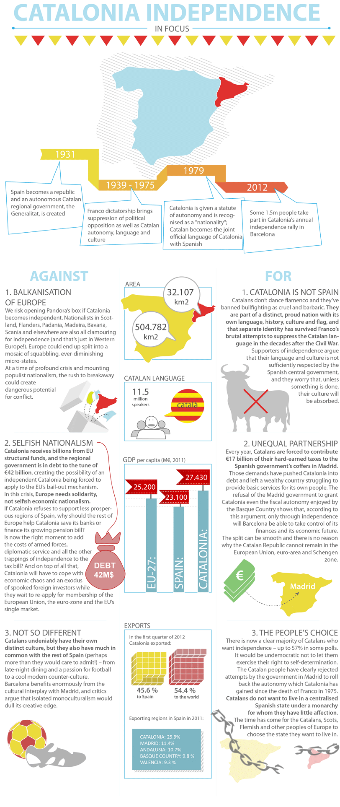

Pros and Cons of Secession
Secession could come with a cost, but is it worth it?
For Catalunya there are inherent benefits to secession, however, there are also many drawbacks for the region as a whole that could put a dire halt to the entire movement. First let’s talk about what the arguments for Catalan secession might be. I’ll cover some of the bigger arguments here and allow the infographic that clearly displays a more detailed description of the arguments below
As I have covered time and time again throughout the course of my analysis on this website, one of the largest arguments for secession in Catalunya is that it is culturally different from Spain. They have their own cultural traditions, their own language, their own parliamentary government, their own national flag, and their own vivid history that pre-dates the Spanish country. Next, and one of the largest arguments made by Puigdemont in his lobbying is that secession will provide Catalunya with fiscal independence from Madrid who currently forces the region to contribute roughly 17 Billion Euro in their regional taxes to the national Spanish government. The Basque country, another region in Spain, has such a fiscal autonomy. These taxes have forced Catalunya into debt and they have realized that the only way they can reach such a fiscal freedom is true independence. There is also the simple argument that in the age of democracy, what the people choose should be what the people get and if that is freedom, then that is what they get.
There are also some fairly significant arguments against the secession of Catalunya that could be the defining factors in why they may not succeed in their secession. Experts worry about the Balkanization of Europe in that if they pave the road for Catalan secession what is to stop countries like Scotland from wanting the same, leading to the overall fragmenting of Europe into significantly smaller, harder to regulate (In the EU for example) nations. Another argument is that Catalunya is being selfish as it has received 42 Billion Euro from the EU, similarly as Catalunya it has paid into Spain. Some argue that this move to independence is to remove the responsibility of supporting less prosperous states within Spain. Finally, some argue that Spain and Catalunya aren’t all that different culturally anyway trying to limit the argument that their cultural identity being a factor for secession.
 Previous: Where Are They Now?Next: American PerspectiveInfographic courtesy of: Debating Europe
{kind=link}